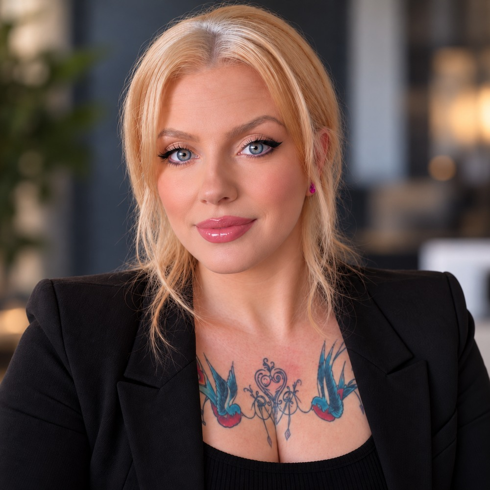
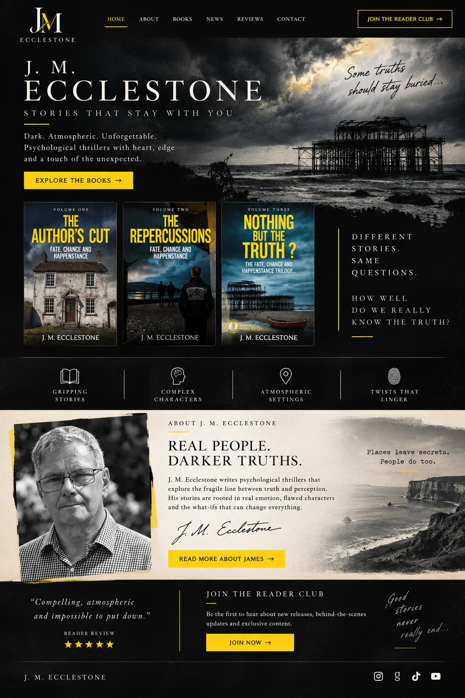
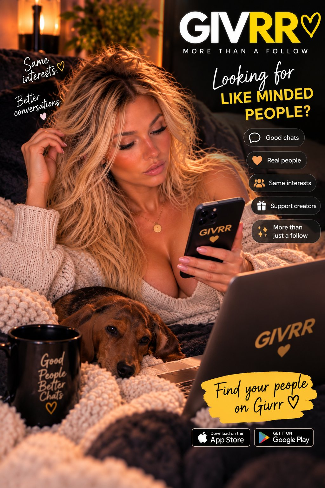

Sponsorship & partnerships
“Marnie has done an excellent job, above and beyond what I originally asked for. She has been a pleasure to work with, and I would definitely work with her again.”
Business strategy and hands-on digital support for small businesses, entrepreneurs and authors.
From strategy and research to digital delivery, publishing and practical support — one specialist to help you move forward.
THINKING. CREATING. GETTING IT DONE.
From the first question to the finished work. Find the support that fits what you need next.
Based in Poole. Working remotely across the UK and internationally.
Explore services & pricesInvestigate an idea, compare options or develop a business plan.
Create, improve or repair your website and digital tools.
Get practical help with your online shop, products and processes.
Develop your logo, identity and business materials.
Prepare book interiors, covers and publishing files.
Bring campaigns, content and day-to-day business projects together.
Keep tasks, information and business administration organised.
I'm Marnie Danson, and Dorset Division is the business I've built around more than 20 years of working across different industries, roles and commercial challenges.
I've managed ecommerce catalogues with more than 5,000 products, built websites and digital systems, developed brands, worked across major selling platforms, supported publishing projects and helped businesses make sense of problems that don't come with straightforward answers.
That experience has taught me something important: a good idea is only useful if it can work in the real world.
I don't separate the strategy from the practicalities. I want to know what something will cost, how it will operate, what could go wrong and what it will take to make it successful.
And because Dorset Division is independent, there's no account manager between us. When you hire me, I'm the person doing the work.
More about me ↗
What stands out to me is her ability to see the bigger picture while also doing the detailed work needed to move a project forward.
She brings commercial awareness, creativity, structured research and practical problem-solving.
Chris
Founder & Managing Director, SNUG
Offered Marnie the position of
Head of Strategy & Product Development
Throughout our dealings, I have found her to be professional, approachable and helpful.
She has been responsive, reliable and clearly takes an interest in understanding the client's requirements.
Patrick Randall
Business naming, brand development & preliminary trademark research
Marnie's role on Patrick's projects
Head of Research & Branding
One of Marnie's strengths is her ability to take initiative, identify what needs attention and find practical ways to move things forward.
She demonstrates a proactive approach to business operations, strong problem-solving abilities and a genuine commitment to delivering results.
Mihaela Berciu
Founder, Leadership Intelligence Forum · Architect of Leaders™
Marnie's position at LIF
Head of Business Operations
INDEPENDENT FEEDBACK
Worked with Dorset Division? Share an honest review of your experience and help others decide whether we're the right fit.
View our Trustpilot profile ↗OFFICIAL TRUSTPILOT REVIEW COLLECTOR
Your experience. Your own words.
A good client relationship isn't built on promises. It's built on doing what you said you'd do, communicating properly and delivering work that makes a difference.
From individual creative projects to ongoing business and digital support, I have received 20+ client reviews and 3 professional endorsements. You can read the original PeoplePerHour feedback alongside reviews submitted directly to Dorset Division.
I also work with returning clients — something I value because it means the relationship doesn't end the moment a project is delivered.
You don't have to take my word for any of it. The original feedback is there to read.
Sponsorship & partnerships
“Marnie has done an excellent job, above and beyond what I originally asked for. She has been a pleasure to work with, and I would definitely work with her again.”
Author support
“Marnie has met the brief completely and within little more than one week of first making her proposal. I have absolutely no hesitation in recommending Marnie to others. It really has been a five star service.”
Business branding
“Marnie has been fantastic to work with. She has been professional, creative and very quick to respond throughout the project. She has listened carefully to my ideas and made the whole process really easy. I’m very happy with the final work and would not hesitate to recommend her to others.”
There isn't one type of project at Dorset Division, because businesses don't all need the same thing.
One client might need a complete online presence. Another needs a complicated ecommerce problem investigated. Someone else needs a brand developed, a publishing project brought together or research that helps them make a commercial decision.
Here's a small selection of the work I've been involved in.

Developing a connected author presence across website, books and digital channels, including website design and development, author branding, content, publishing support and ongoing digital management.

Creating a distinctive landing page for a creator-focused platform, combining visual design, audience messaging and clear routes for creators and fans, alongside creator research and outreach support.
Creative and technical book-cover work, bringing the design into line with the project's publishing requirements.
How we work together
Bring your idea, your brief or the challenge you're facing. We'll work out what matters and where to begin.
Some projects start with a specific task. Others start with a conversation about what's not working.
My job is to understand the situation, work out the sensible way forward and then put that into practice.
See my approach ↗Tell me what you're trying to achieve, what's getting in the way or what you need someone to take care of. We start with the real situation, not a sales pitch.
I'll look at the requirements, investigate where necessary and recommend a practical approach. You'll know what's involved, what it costs and what we're agreeing to do.
Research, strategy, website development, ecommerce, branding, content, marketing or publishing — whatever the agreed project requires, I get on with delivering it.
The work is reviewed, finalised and handed over clearly. If there are further steps, you'll know what they are and why they matter.
Whether you're starting something new, developing an existing business or tackling a challenge, I'd love to hear about it.
We'll start with a straightforward conversation about your business, your goals and how I can help.